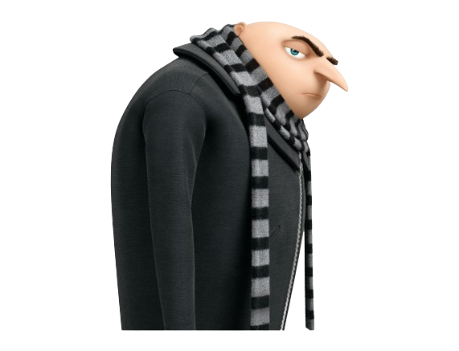

o vilão Gru é apenas um garoto de 12 anos, que arquiteta planos fracassados para dominar o mundo de seu porão no subúrbio. Ao cruzar o caminho dos Minions, ele passa a dar os primeiros passos para alcançar seus objetivos, formando uma estranha família.
